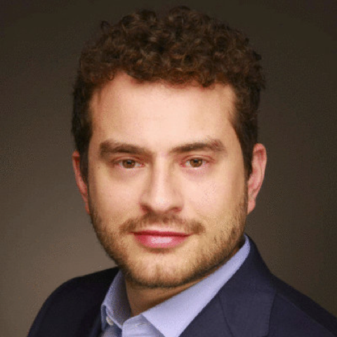
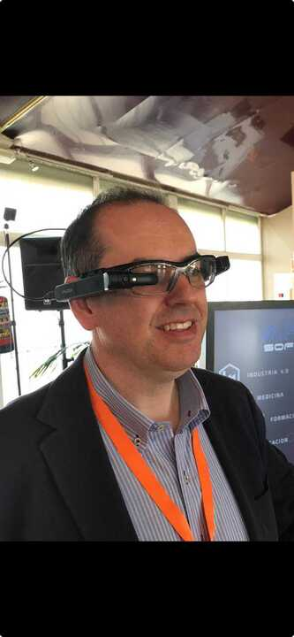
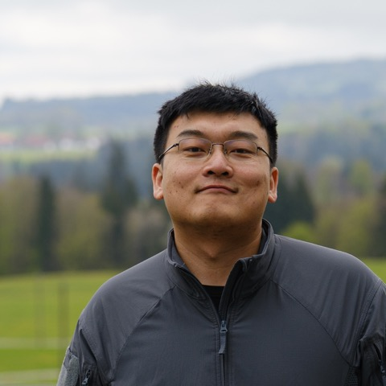

About
Physical AI begins with photons. Before a robot can reason, navigate, or act, its cameras must turn a messy world of light into signals that AI models can trust. Every robot, drone, and autonomous system sees the world through a camera stack—and that stack is where most failures start: low light, dust, blur, bad weather, imperfect optics, sensor noise, miscalibration, and brittle ISPs.
Imaging for Physical AI is where sensing meets intelligence. We bring together sensors, optics, neural ISPs, low-level vision, and downstream perception—so cameras stop being passive pixel sources and become trusted, deployable eyes for machines.
Built on the BMVC 2025 Smart Cameras workshop (100+ attendees) and the ICCV 2025 neural imaging tutorial. At ACCV 2026 in Osaka, we aim to make this the reference community for Imaging for Physical AI.
Call for Papers
A venue for students and researchers to present work on imaging for robotics, and embodied AI. Topics include:
- Task-aware image quality — detection, tracking, mapping, control
- Neural & robust camera pipelines — RAW, denoising, deblur, HDR, ISP
- AI + optics co-design — aberrations, SWaP, edge cameras
- Novel sensing — events, ToF/gated, polarization, thermal
- Embodied perception — VLM/VLA robustness, sim-to-real
- Evaluation & safety — metrics, failures, uncertainty, realtime
4-page extended abstracts / short workshop papers, double-blind review. Accepted work will be presented as posters, with selected orals and lightning talks. The track is non-archival (listed on the website).
| Submission deadline | October 5, 2026 |
|---|---|
| Notification | November 2, 2026 |
| Camera-ready / poster material | November 16, 2026 |
| Workshop | December 14, 2026 · Room 1006 · ACCV Osaka |
Submission link will be announced here soon.
Tentative Schedule
Full-day · Room 1006 · December 14, 2026 · times local to Osaka (tentative).
| 09:00 – 09:15 | Welcome & opening remarks |
| 09:15 – 10:30 | Invited talks — imaging & neural ISPs |
| 10:30 – 11:00 | Coffee break |
| 11:00 – 12:15 | Contributed orals / spotlights |
| 12:15 – 13:30 | Lunch |
| 13:30 – 14:45 | Invited talks — robotics, adverse conditions & deployment |
| 14:45 – 15:45 | Posters & demos |
| 15:45 – 16:05 | Coffee break |
| 16:05 – 16:45 | Failure cases & open challenges |
| 16:45 – 17:30 | Panel & closing |
Invited speakers will be listed as confirmations finalize.
Organizers


Lev Markhasin
Tenkai AI

Alvaro Garcia
CIDAUT AI

Zihao Lu
Univ. of Würzburg
Primary contact: marcosvc@tenkai.ai · Official listing: ACCV 2026 Workshops